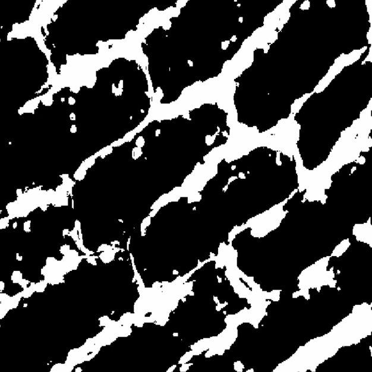
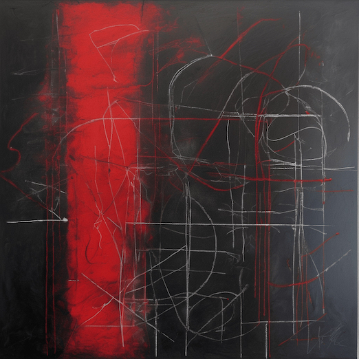
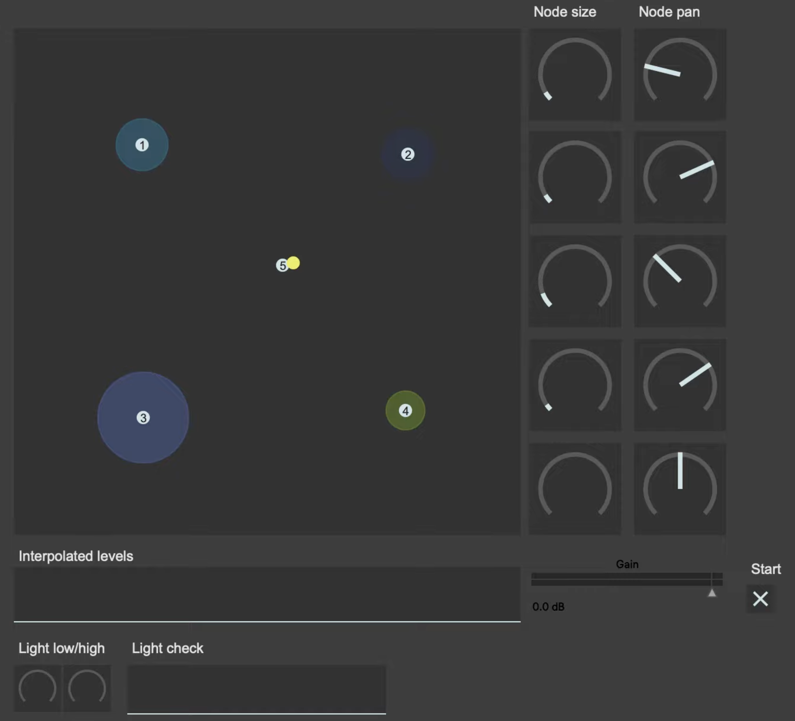

Audiovisual

Microscopic patterns and biological processes are translated into generative sound in real time.
Visual

r3d
Computational

Atmosspheric sound mixing.
Generative

Interactive generative sketch where ideas drift, connect, and dissolve into a moving network.